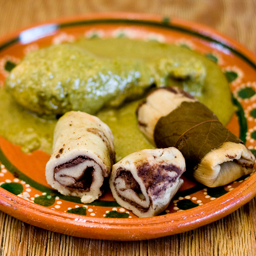
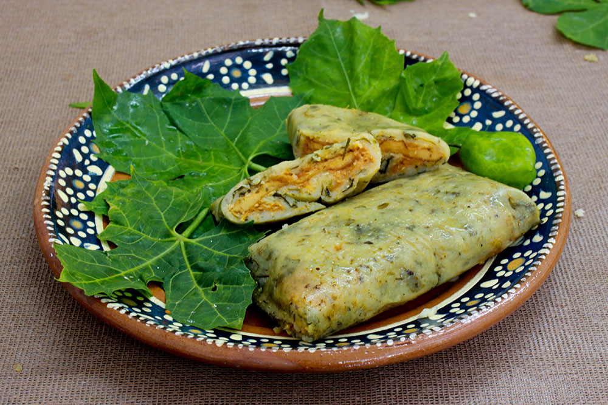
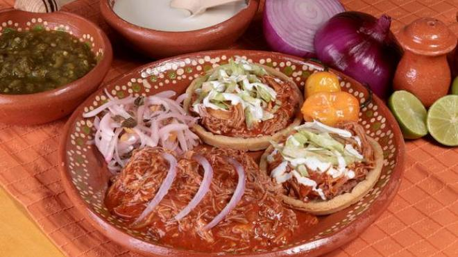
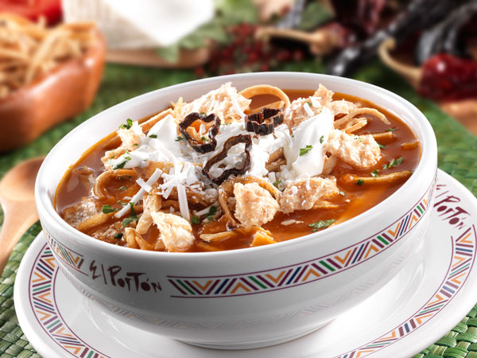
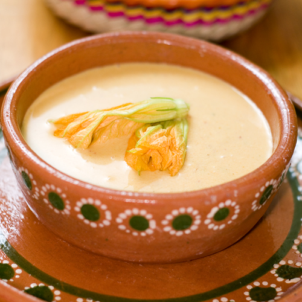
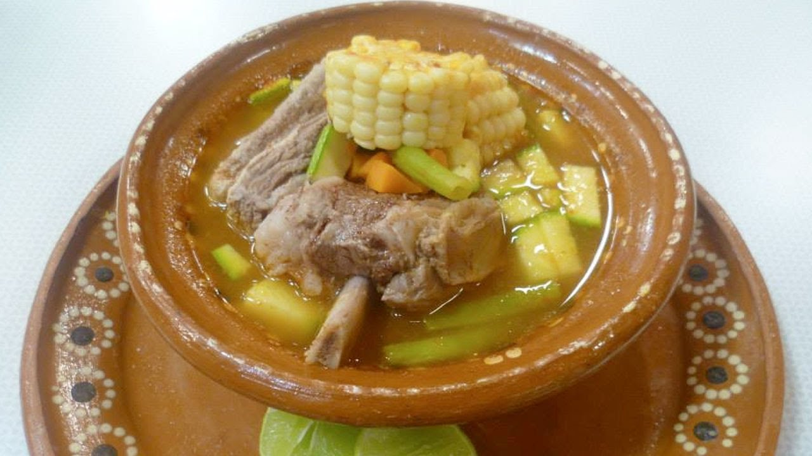

*TAMALITO DE FRIJOL $81
Estilo tabasqueño, bañado con salsa de jitomate y espolvoreado con queso chiapaneco. Es único en su estilo.
*TAMALITO DE CHAYA $90
Tamal de masa de maíz con hojas de chaya picadas, bañados en salsa de jitomate, espolvoreados con queso chiapaneco. La chaya es una hoja verde originaria de la península de Yucatán. Este tamal es ideal para vegetarianos y veganos. Los veganos los deben de pedir sin queso.
*PANUCHOS DE COCHINITA PIBIL $147
Tres piezas para compartir en el centro de la mesa.
*SOPA DE TORTILLA OAXAQUEÑA $126
Considera la sopa reina de la cocina mexicana, la presentamos en un auténtico alhajero hecho y pintado a mano. Elaborada a base de caldo de pollo con jitomate, pollo deshebrado, crema, aguacate y trocitos de tortilla.
CLÁSICA CREMA DE FLOR DE CALABAZA $98
Se necesitan 18 flores para hacer un tazón de esta crema, a esto es lo que yo llamo “el gran lujo mexicano”. Receta clásica.
CALDO TLALPEÑO $95
Caldo de pollo con verduras, pechuga de pollo deshebrada, arroz y garbanzos. Lo servimos con rebanadas de limón cilantro, chipotle y cebolla picada para que usted lo condimente a su gusto.